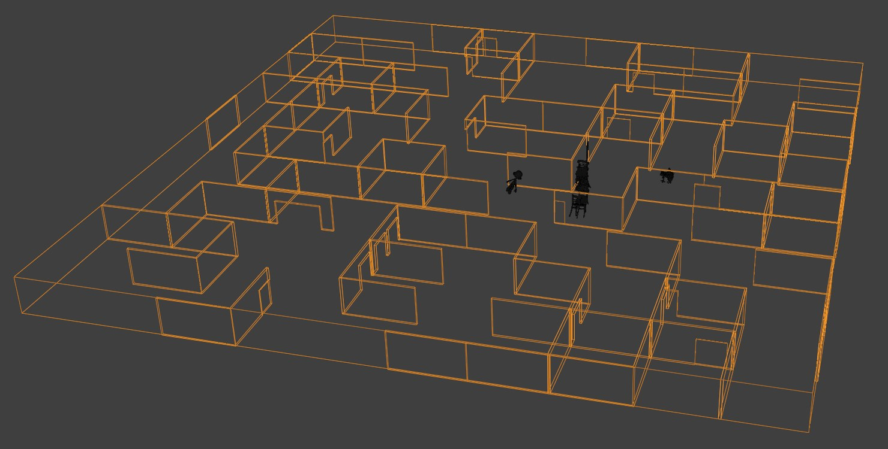
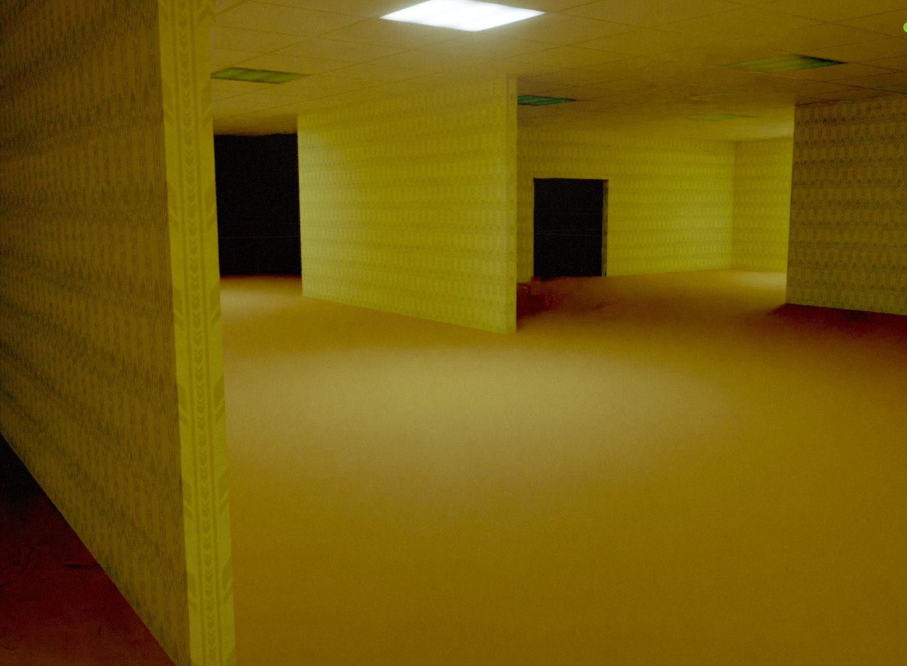
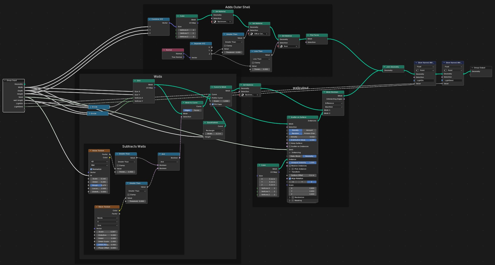

Backrooms
Endless yellow office rooms, built with Geometry Nodes and lit to feel uneasy.

Teaser frame. Animation in progress.
The project
An animated short set in the Backrooms: endless empty office rooms with yellow wallpaper and buzzing lights. The goal is a quiet, uneasy mood, like old found footage.
My role
- Built the rooms with Geometry Nodes, so I can change the size and layout with a few numbers and a seed
- Lit the scene with the ceiling panels, with some lights turned off to break up the space
- Composited the look in Blender: color, dithering, vignette, streaks, bloom and film grain
- Type
- Animated short, in progress
- Team
- Solo project
- Software
- Blender, Geometry Nodes, Compositor
- Focus
- Procedural environment, lighting, compositing
- Year
- 2026
From clay to final

1. Clay
The rooms and props in plain clay, before materials and light.

2. Materials
Yellow wallpaper, carpet and ceiling tiles, lit flat.
3. Final teaser frame
Some ceiling lights off, hard shadows and a sick yellow green grade.
Procedural rooms

Generated layout
The whole floor plan comes from the node setup. A new seed gives a new maze of rooms.

Inside the rooms
Doorways cut into the walls lead into dark rooms, which keeps the space feeling endless.

Geometry Nodes
One node setup builds the rooms: an outer shell with floor and ceiling materials, walls from a grid, walls removed with noise and wave textures, and cutouts scattered and booleaned in. Width, depth, height and a seed change the layout, and stored attributes control which ceiling lights are on.
Compositing

Compositing
Tune Image boosts the color, then Bayer dithering, a vignette, light streaks, bloom and Super 35mm film grain give the old camera look.
More work: 3D & Animation, VFX, Lighting, Film & Content